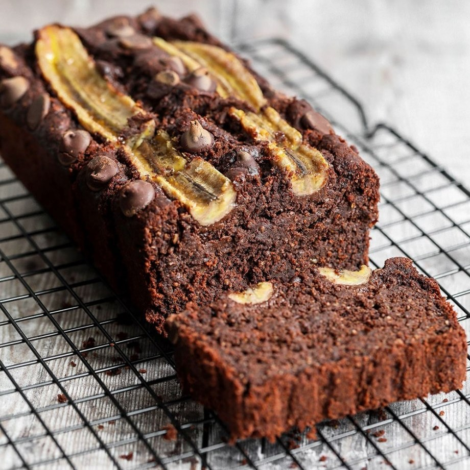

Bolo de Pão com Banana e Chocolate
Ingredientes
3 Pães Amanhecidos
2 xícaras de Leite
6 Bananas Maduras
3 Ovos
1/2 xícara de açúcar
2 colheres de sopa de manteiga
1/2 xícara de chocolate picado ou gotas
1 colher de chá de canela
1 colher de sopa de fermento químico
Como fazer
Pique os Pães e deixe de Molho no leite por 10 minutos.
Bata no liquidificador o pão amolecido com o leite, as bananas, os ovos, o açúcar e a manteiga.
.
Misture a canela, o chocolate e o fermento.
Coloque em forma untada.
Asse a 180 °C por cerca de 35–40 minutos.
Dica
Sirva quente com sorvete de creme ou doce de leite.
